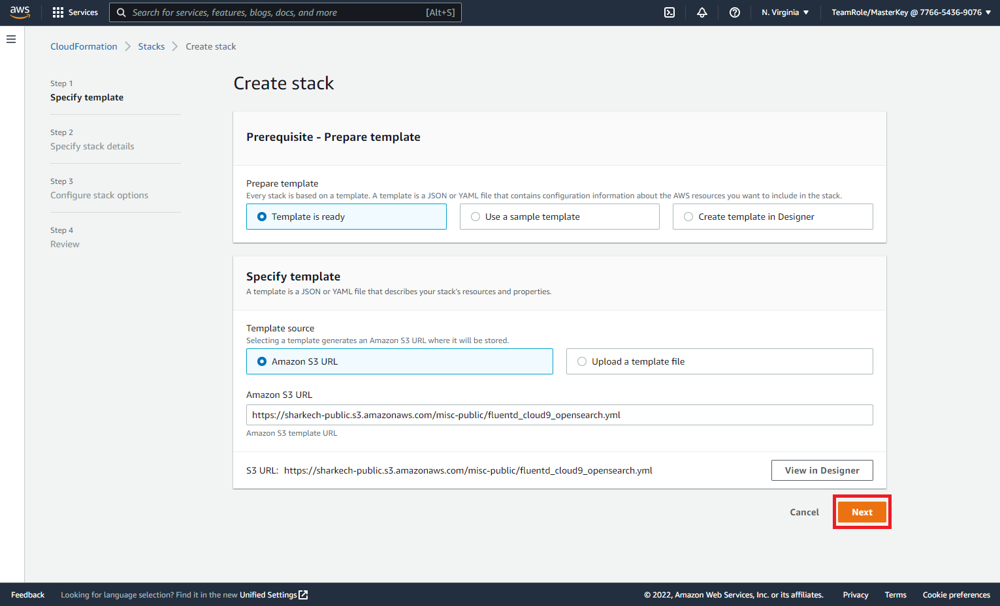
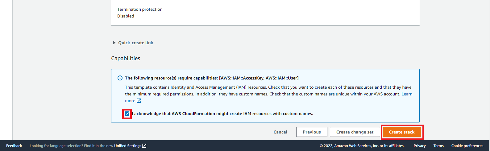
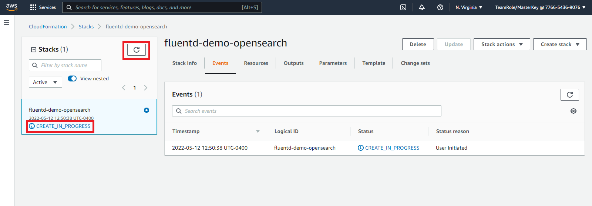
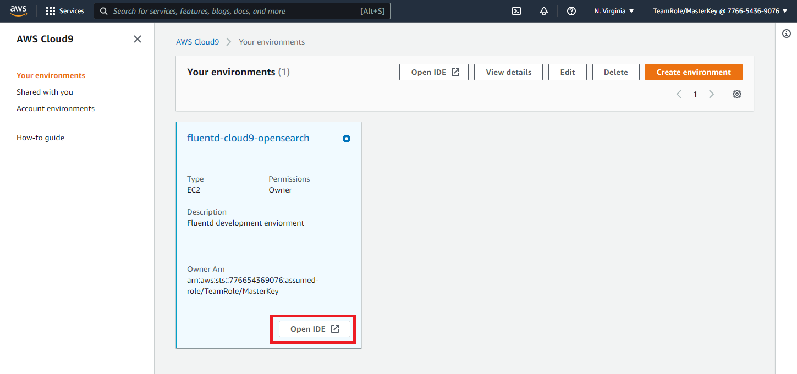
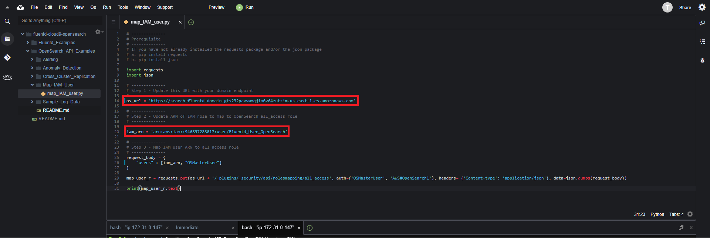
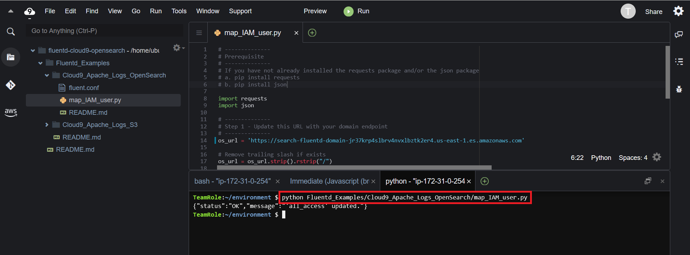

CloudFormation (Automated)
Step 1 - Deploy CloudFormation Template
- Right click the Launch CloudFormation Stack button below and open the link in a new tab.

- Navigate to the new tab you just opened. You should see a screen similar to the one below

- Click on the Next button
- Continue to click on the Next buttons until you arrive at the final review screen. Scroll to the bottom of this page
- At the bottom of the page click on I acknowledge that AWS CloudFormation might create IAM resources with custom names
- Click on Create stack

This will begin the process of deploy an Amazon OpenSearch service, Kinesis Data Firehose and Cloud9 environment. You will automatically be redirected to the following screen

The deployment will take 5 - 10 minutes to complete. You can click on the refresh button and view the status of the deployment. The initial status will be CREATE_IN_PROGRESS when the status is CREATE_COMPLETE. Click on the Outputs section of the CloudFormation stack and copy the values of the output. The output values will be used in subsequent parts of this workshop.

Step 2 - Map IAM Role with OpenSeach Role
You now have an OpenSearch domain and Cloud9 environment created. In order to send logs to OpenSearch via Fluentd you need to grant the IAM role that Fluentd will use permissions in OpenSearch.
The CloudFormation stack already created an IAM role for us. you need to map the IAM role to an OpenSearch role. To map the role you can run a python script in Cloud9 that will use the OpenSearch APIs to map the IAM role the all_access role in OpenSearch.
For the purposes of this lab you are mapping our IAM role to the all_access role in OpenSearch. In a production environment more limited permissions should be granted to the IAM role Fluentd will use
To map the IAM role to the OpenSearch role follow the steps below
- Go to the Cloud9 Console
- Click on Open IDE

Once you have opened the Cloud9 IDE navigate the folder structure on the left hand menu to and open the Flentd_Examples folder. Then the Cloud9_Apache_Logs_OpenSearch sub-folder. In this folder open the map_IAM_user.py file.
In the map_IAM_user.py file
- Replace the value of the os_url variable with the value of the OSDomainURL key from the CloudFormation stack outputs
- Replace the value of the iam_arn variable with the value of the IAMUserARN key from the CloudFormation stack outputs
- Save the python file

You can now run the map_IAM_user.py script by executing the following commands in the Cloud9 terminal
pip install requestspython Fluentd_Examples/Cloud9_Apache_Logs_OpenSearch/map_IAM_user.py

Our AWS environment set up. When you are ready begin the next step Configure Fluentd